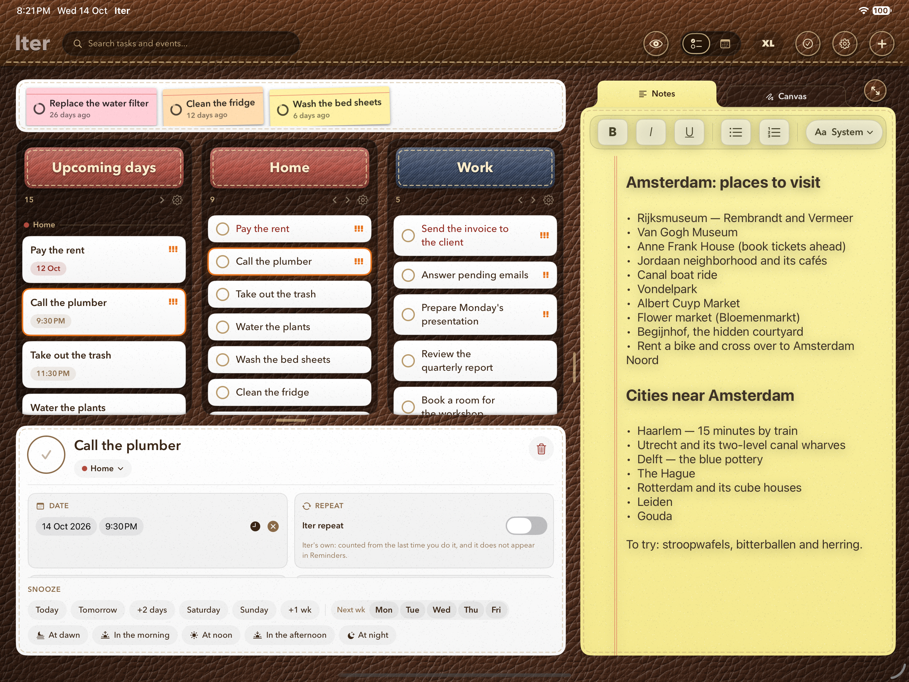
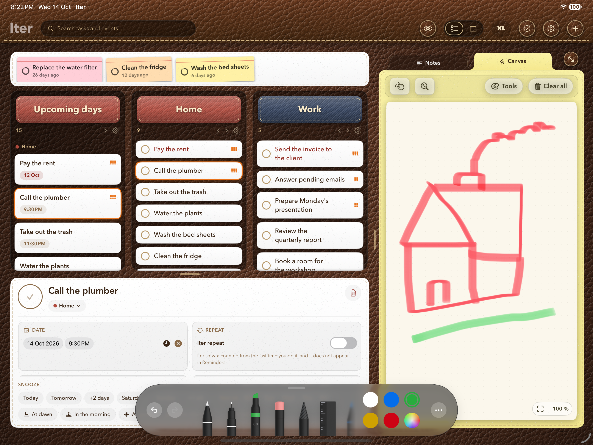

Siempre quise usar mi iPad como un organizador de tareas. Pero no como cualquier app de to-do, sino como algo más cercano al papel. Un espacio que reuniera las tareas que tengo en Recordatorios y los eventos del calendario, y que además me permitiera hacer anotaciones libres o dibujos, como un anotador sobre la mesa.
\n\nDurante la última década probé decenas de aplicaciones buscando algo parecido. Lo más cercano que encontré fue aprovechar las funciones multitasking de iPadOS para abrir dos o más apps al mismo tiempo. La experiencia nunca terminaba de sentirse como un todo, y había que lidiar y mantener múltiples apps.
\n\nAsí que, una vez más este año, decidí encarar el proyecto por mi cuenta.
\n\nHoy presento Iter, mi app de tareas, calendario y notas, con soporte para Apple Pencil. Todo en un mismo lugar, pensada para iPad y disponible también en iPhone.
\n\n
Iter organiza las tareas en columnas configurables, que te permiten construir un tablero a medida según tus necesidades. El calendario integra tareas y eventos, mientras que la libreta ofrece un espacio para esas ideas y garabatos que te saltan a la mente cuando estás haciendo otra cosa y no sabés dónde poner.

\n\nLa libreta de dibujo libre sincroniza con iCloud, mientras que el resto de las cosas sincronizan por su propia cuenta: las tareas son las mismas que tenés en Recordatorios y los eventos son los de Calendario.
\n\nLa idea es combinar la estructura de un organizador con la libertad de un anotador de papel, sin tener que saltar de una app a otra.
\n\nTambién, como siempre, mi idea es ofrecer opciones de personalización. Iter ofrece un diseño con distintas texturas de cuero y diferentes colores. Las columnas, el calendario y el anotador ofrecen cada uno su propio tipo de papel, que podés cambiar. (A mí personalmente me encanta el papel legal amarillo que usaban en Better Call Saul en las escenas de abogados.)
\n\nExplorala en la App Store y descargala ya mismo: es gratuita, como todas mis apps. No te pide dinero, no tiene suscripciones, no recolecta datos, no tiene avisos, no muestra cartelitos constantes, no da consejos de vida ni te recomienda dietas. Hace lo que tiene que hacer sin molestarte.
Descargar Iter en la App Store ↗
— L.D.